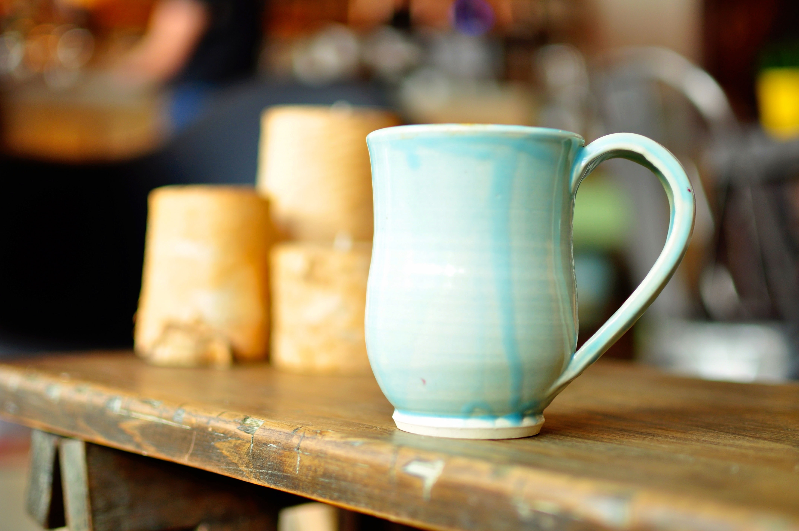

Pottery is the process and the products of forming vessels and other objects with clay and other ceramic materials, which are fired at high temperatures to give them a hard, durable form. Major types include earthenware, stoneware and porcelain. The place where such wares are made by a potter is also called a pottery (plural "potteries"). The definition of pottery used by the American Society for Testing and Materials (ASTM), is "all fired ceramic wares that contain clay when formed, except technical, structural, and refractory products."[1] In archaeology, especially of ancient and prehistoric periods, "pottery" often means vessels only, and figures of the same material are called "terracottas". Clay as a part of the materials used is required by some definitions of pottery, but this is dubious.

Pottery is one of the oldest human inventions, originating before the Neolithic period, with ceramic objects like the Gravettian culture Venus of Dolní Věstonice figurine discovered in the Czech Republic dating back to 29,000–25,000 BC,[2] and pottery vessels that were discovered in Jiangxi, China, which date back to 18,000 BC. Early Neolithic and pre-Neolithic pottery artifacts have been found, in Jōmon Japan (10,500 BC),[3] the Russian Far East (14,000 BC),[4] Sub-Saharan Africa (9,400 BC),[5] South America (9,000s-7,000s BC),[6] and the Middle East (7,000s-6,000s BC). Pottery is made by forming a ceramic (often clay) body into objects of a desired shape and heating them to high temperatures (600-1600 °C) in a bonfire, pit or kiln and induces reactions that lead to permanent changes including increasing the strength and rigidity of the object. Much pottery is purely utilitarian, but much can also be regarded as ceramic art. A clay body can be decorated before or after firing.
Clay-based pottery can be divided into three main groups: earthenware, stoneware and porcelain. These require increasingly more specific clay material, and increasingly higher firing temperatures. All three are made in glazed and unglazed varieties, for different purposes. All may also be decorated by various techniques. In many examples the group a piece belongs to is immediately visually apparent, but this is not always the case. The fritware of the Islamic world does not use clay, so technically falls outside these groups. Historic pottery of all these types is often grouped as either "fine" wares, relatively expensive and well-made, and following the aesthetic taste of the culture concerned, or alternatively "coarse", "popular", "folk" or "village" wares, mostly undecorated, or simply so, and often less well-made.
